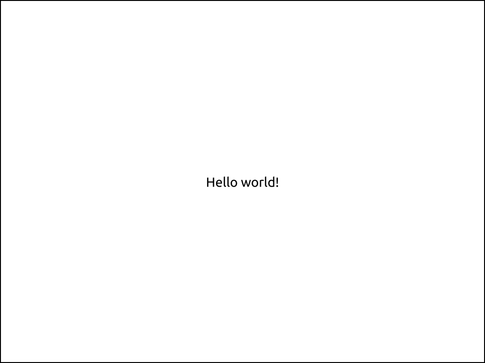

Elsie#
Elsie allows you to create slides programmatically using Python.
Elsie is a Python library that lets you build SVG slides in a composable way and then render them to PDF. There is no DSL or GUI – presentations created with Elsie are fully programmed with Python.
Hello world#
import elsie, datetime
slides = elsie.Slides()
@slides.slide()
def hello_world(slide):
this_year = datetime.datetime.now().year
slide.text(f"Hello from {this_year}!")
elsie.render("slides.pdf")

Features#
-
Automatic layout Elsie provides a simple yet powerful layout model. Need rows? Columns? Grids? Padding? Aligned text? Relative/absolute positioning? Automatic scaling? We got you covered.
-
Animations and fragments Reveal your slides gradually using fragments or create custom step-by-step animations using Python code. Or draw a fine-tuned SVG image by hand in
Inkscapeand let Elsie turn it into an animation using a handy layer-naming convention. -
Source code highlighting Enjoy automatic source code highlighting. Create code walkthroughs using individual line highlighting or arrows pointing to specific code elements.
-
Batteries included Leverage familiar SVG features - fonts, colors, dashed line borders, you name it. Include
PNG/JPG/SVGimages directly into your slides. Render LaTex into your slides. Debug your slides interactively in Jupyter notebooks. -
Familiarity At its heart, Elsie is an API for creating SVG images, optimized for making slides. If you know basics of Python and SVG, you'll be right at home.
Every tool has its disadvantages though.
- Elsie provides a rather low-level API. While that means that you can create a slide in almost any way you like, you will sometimes have to roll up your sleeves to achieve your desired goal. But once you implement it, just put it inside a function and reuse it!
- Elsie produces PDF slides, so it can only create animations with a single frame per slide. If you need 60 FPS animations or GIFs in your presentations, this tool is not for you.
- Currently, Elsie renders SVG slides to PDF using
Inkscape. Therefore, you must have it installed on your system for it to work. We provide a Docker image withInkscapefor convenience. - Elsie is tested only on Linux machines, if you find a problem on a different platform, do not hesitate to open a GitHub issue.
FAQ#
- Why do you use
Inkscapeinstead of e.g.Cairo? TODO - Why don't you use a known layout model, e.g.
flexbox? TODO - Why is there no support for lists in
Elsie? TODO